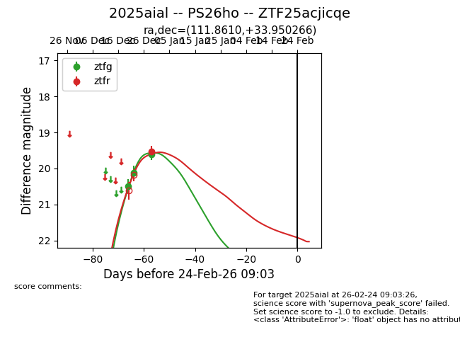
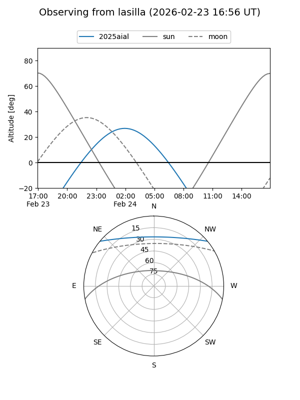
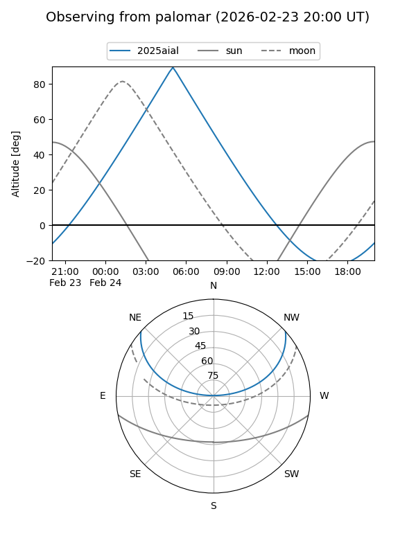
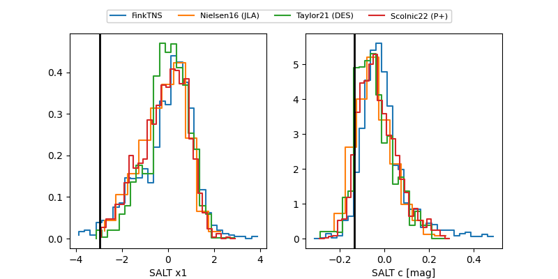

2025aial
Target 2025aial at 2026-01-19 11:36
Aliases and brokers:
FINK: link
Lasair: link
ALeRCE: link
TNS: link
YSE: link
alt names
ZTF25acjicqe (ztf,fink_ztf)
2025aial (tns,yse)
PS26ho (panstarrs)
Coordinates:
equatorial (ra, dec) = 111.8610,+33.95027
equatorial (HMS+DMS) = 07:27:26.65,+33:57:00.96
galactic (l, b) = (184.8110,+21.72578)
Flags:
Photometry:
last ztfg=19.61, ztfr=19.53
3 ztfg, 1 ztfr detections
Lightcurve

Visibility


Additional plots
